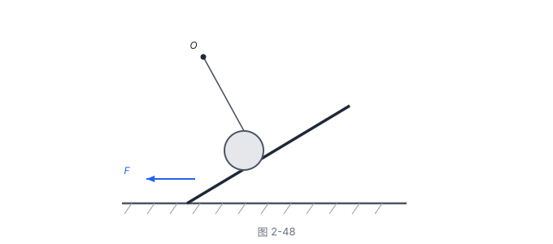
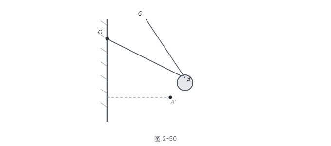
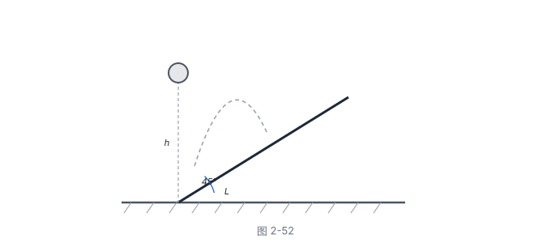
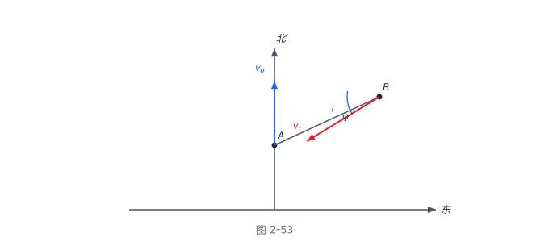
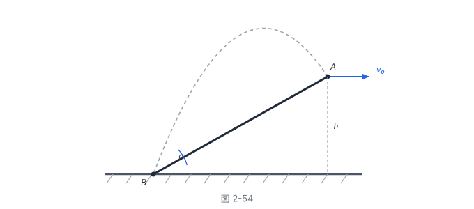

练习题（二）
本练习配合第二章各节使用，共 15 题。凡定性判断类题目，建议用力的（或速度的、动量的）矢量三角形作图分析。
第 1 题左推斜面，绳张力与压力
如图 2-48 所示，小球被轻绳斜吊着靠在光滑的斜面上，今用力缓慢向左推动斜面移动一小段距离，在此过程中绳上的张力和斜面所受压力将如何变化？

第 2 题四种放法球对斜面的压力
如图 2-49 所示，若不计摩擦，当球保持静止状态时，球对斜面的压力（ ）。
A. 在四种情况中压力都等于 \( mg\cos\theta \) B. 在第③种情况中压力最大
C. 在第②种情况中压力最大 D. 在第④种情况中压力最小，在第①种情况中压力最大
第 3 题拉灯换位置
用一根细绳，沿水平方向把电灯拉至如图 2-50 所示的实线位置 \( A \)，细绳的一端固定在墙上 \( O \) 点，这时电线 \( CA \) 上所受拉力为 \( T_1 \)，绳 \( OA \) 上所受拉力为 \( T_2 \)。如果把电灯拉到如图 2-50 中虚线位置 \( A' \)，水平细绳的一端固定在墙上 \( O' \) 点，则 \( T_1 \) 和 \( T_2 \) 的大小变化是（ ）。
A. \( T_1 \)、\( T_2 \) 都增大 B. \( T_1 \) 增大、\( T_2 \) 减小 C. \( T_1 \) 减小、\( T_2 \) 不变 D. \( T_1 \)、\( T_2 \) 都减小

第 4 题绳缩短后 T、N 怎么变
如图 2-51 所示，球和墙壁无摩擦，绳的拉力为 \( T \)，墙对球的弹力为 \( N \)，如果绳的长度缩短，则（ ）。
A. \( T \)、\( N \) 都不变 B. \( T \) 减小、\( N \) 增大 C. \( T \) 增大、\( N \) 减小 D. \( T \)、\( N \) 都增大
第 5 题落斜坡弹出后再落斜坡
如图 2-52 所示，一只球自 \( h = 10\,\mathrm{m} \) 高处自由落下，落到一个倾角为 \( 45^\circ \) 的斜坡上。球被斜坡沿水平方向弹出，弹出速率和落到斜坡时速率相同。求小球从斜坡弹出后再落到斜坡上时，离被弹出时的距离 \( L \)。

第 6 题军舰与汽艇相遇
一艘军舰正以恒定速度 \( v_0 \) 向正北方向行驶，当它经过 \( A \) 点时，在东偏北 \( \varphi \) 角方向上的 \( B \) 点有一艘汽艇以恒定速度 \( v_1 \) 出发，准备和军舰相遇，如图 2-53 所示。问：
（1）汽艇航行时和直线 \( AB \) 所成 \( \beta \) 角多大？
（2）汽艇和军舰相遇时间 \( t \) 为多少（已知 \( AB \) 长为 \( l \)）？

第 7 题飞机绕等边三角形
飞机以 \( v = 39\,\mathrm{km/h} \) 的速度绕一个边长为 \( L = 20\,\mathrm{km} \) 的等边三角形飞行。设风速 \( u \) 为 \( 21\,\mathrm{km/h} \)，方向和三角形的一边平行，并和飞机起飞方向相同。求：飞机绕三角形一周需要时间为多少？
第 8 题由风向定风速
有人以 \( 3\,\mathrm{m/s} \) 的速度向东走，感觉到风从北方吹来；行走速率加倍时，则感觉到风从东北吹来。则风的速率为______，方向是______。
第 9 题汽车迎风阻力
一辆汽车自北向南行驶速度 \( v \) 为 \( 54\,\mathrm{km/h} \)，自东南向西北的风速 \( v_0 \) 为 \( 8\,\mathrm{m/s} \)。假设汽车可以近似看做长方体，与前进方向垂直的横截面积为 \( 5\,\mathrm{m^2} \)，不考虑其他效果，求汽车行驶过程中受到迎面而来的空气阻力（空气密度 \( \rho = 1.29\,\mathrm{kg/m^3} \)）。
第 10 题小球冲向台面的冲量
小球沿曲线冲向台面，并以大小为 \( 10\,\mathrm{kg \cdot m/s} \)、\( 45^\circ \) 角方向跟台面发生作用，被弹起后动量大小为 \( 9\,\mathrm{kg \cdot m/s} \)，方向跟台面也成 \( 45^\circ \) 角。求台面受到小球的冲量。
第 11 题平抛多长时间速度变为 2v₀
一物以速度 \( v_0 \) 平抛，经多长时间它的速度变为 \( 2v_0 \)（不计空气阻力）。
第 12 题抛出 3 秒落地求初末速度
在平台上以仰角 \( \alpha = 37^\circ \) 抛出一物，经 \( 3\,\mathrm{s} \) 落地，末速度与地面成 \( \beta = 53^\circ \) 角，不计空气阻力，求初速度、末速度的大小及平台的高度（\( g = 10\,\mathrm{m/s^2} \)）。
第 13 题手榴弹三块求第三块
质量为 1 千克的手榴弹，原来静止，爆炸后在水平面内分成三块，其中一块的质量 \( m_1 \) 为 \( 300\,\mathrm{g} \)，以 \( 300\,\mathrm{m/s} \) 的速度，沿正东方向飞去；第二块质量 \( m_2 \) 为 \( 450\,\mathrm{g} \)，以 \( 200\,\mathrm{m/s} \) 的速度，沿北偏西 \( 30^\circ \) 的方向飞去。试用作图法求出第三块速度的大小和方向。
第 14 题最高点爆炸成两块
一炮弹以初速度 \( v_0 \) 和仰角 \( \theta \) 发射，到达最高点时爆炸成质量相等的两块，其中一块以速率 \( v_1 \) 垂直下落。求另一块速度的大小和方向。
第 15 题何时离斜面距离最大
如图 2-54 所示，一小球在斜面顶端 \( A \) 点水平抛出，落地时的位置刚好在 \( B \) 点。已知斜面高为 \( h \)，倾角 \( \alpha = 30^\circ \)。问抛出后多长时间小球离斜面距离最大？
